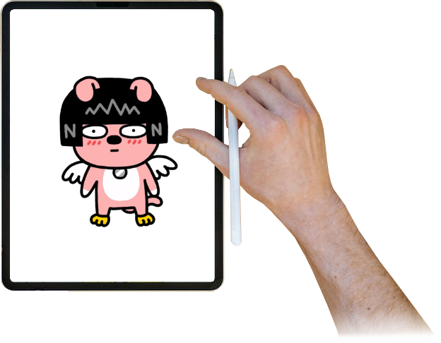
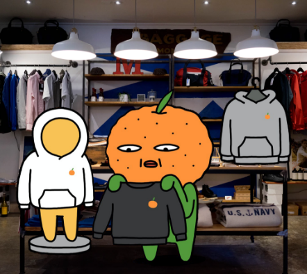
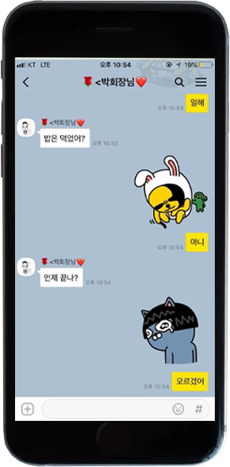
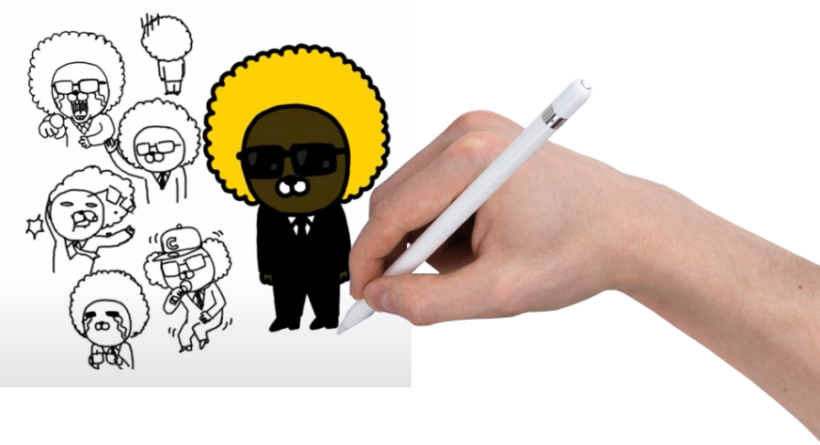

소개
제작과정
인터뷰
디자인 노하우
Know-how to design
좋은 캐릭터를 디자인하는 8가지 원칙
01
과도한 특징을 넣지않는다.
가장 중요하게 여기는 것으로, 특징을 계속 넣었는데도 이상하다면
오히려 특징을 빼는 것이 캐릭터의 특징을 강조하는 방법이다.


02
소통을 위한 '공감'을 이끌어야 한다.
캐릭터는 대중에게 어필해야 하기 때문에 항상 캐릭터만의 특징은
물론, '어떤 목적을 가지고 작업을 해야할까' 생각해야한다.
03
처음부터 장대한 계획보다는 현재에 집중한다.
천천히 한 단계를 올라서면 방향이 보이고, 또 올라가면 계획하지 않았던
방향이 생기며 이러한 과정에서 여러 가지 길들이 보이게 된다.
04
캐릭터 1차원적으로 해석하지 않는다.
있는 그대로의 성향을 갖게되면
사용자는 그 이상의 무언가를 궁금해하지 않는다.

05
항상 긍정적인 느낌을 주지 않아도 된다.
캐릭터가 주는 이미지는 긍정적이어야 한다고 생각하지만,
결과적으로 사용자의 입장에선 그것은 중요하지 않다.
06
캐릭터의 용도를 생각하며 디자인한다.
개발자이기 전에 사용자의 입장에서 이모티콘이 필요했던 순간을 생각해서
디자인하다보면 같은 대화를 하더라도 이모티콘이 있느냐 없느냐로
대화방의 온도가 달라 질 수 있다.
07
결과보단 스케치, 퀄리티보단 느낌이다.
캐릭터가 주는 느낌을 잡기 위해선 완성품보다는
스케치가 전달해주는 느낌이 가장 강력하다.

08
객관적인 사고를 잃지 않는 훈련도 중요하다.
오랜 작업을 하다보면 자기 생각에 갇히고 객관적인 사고를 잃게된다.
그렇기 때문에 스케치를 하면서 조금씩 고쳐나가다보면 좋은 캐릭터를 만들 수 있다.